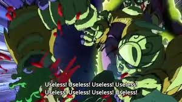
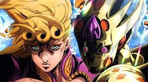

Gorino Giovanna is the part 5 protaganist his stand allows his to heal himself or other and also turn objects into living thngs like plants or non living things like rocks.

He is known as the son of Dio Brando but he wasnt raised by dio he was raised on the streets of italy. his goal is to stop the boss of the mafia to stop the process of drug income.

But soon finds out that theres more to how stands came to be than he realized but also finds out that they arent only created but can also be upgraded.